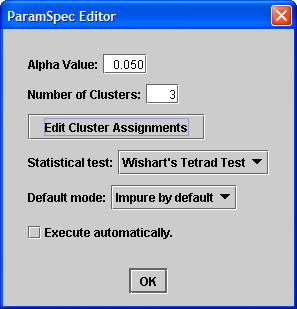
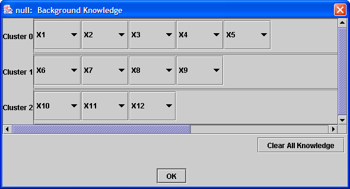

Search Algorithms: Purify |
Introduction
Entering Purify parameters
Purify is one of the three algorithms in Tetrad designed to build pure measurement/structural models (the others are the MIM Build algorithm and the Purify algorithm).
Purify should be used to select indicators of a given measurement model such that the selected indicators form a pure measurement model. In other words, the user specifies a set of clusters of indicators, where each cluster containts indicators of an assumed latent variable. The task of Purify is to discard any indicator that is impure, i.e., that may have other common causes with other indicators, or that is a direct cause of other indicators.
The Purify algorithm assumes that the population can be described as a measurement/structural model where observed variables are linear indicators of the unknown latents, and that the given measurement model is correct, but perhaps impure. Notice that linearity among latents is not necessary (although it will be necessary for the MIM Build algorithm) and latents do not need to be continuous.
All variables are assumed to be continuous, and therefore the current implementation of the algorithm accepts only continuous data sets as input. For general information about model building algorithms, consult the Search Algorithms page.
Create a new Search nodes as described in the Search Algorithms page, but in order to follow this tutorial, use the following graph to generate a simulated continuous data set:
Notice that, in this example, X4, X5 and X7 are in impure relations. Notice also that X4 is not an impurity anymore when X7 is removed, but X5 and X7 cannot be made pure, since they are indicators of two latents.
When the Purify algorithm is chosen from the Search Object combo box, the following window appears:

The parameters that are used by Purify can be specified in this window. The parameters are as follows:

Execute the search as explained in the Search Algorithms page.
Although a given measurement model may have many different pure submodels, the Purify algorithm has a deterministic output: it will basically throw away indicators that violate constraints, following an order determined by the number of constraints that are violated by each indicator. It returns a pure measurement model. In our example, the outcome should be as follows if the sample is representative of the population:
Edges with circles at the endpoints are added only to distinguish latent variables from the indicators. Purify does not make any claims about the causal relationships among latent variables (this is the role of the MIM Build algorithm). The labels given to the latent variables are arbitrary.
Sometimes some latents will not have any indicator. As an important sidenote, if some cluster has only two variables, Purify cannot find any condition by which the two indicators in this cluster can be considered pure. If the Impure by default method is chosen, such indicators will always be removed.